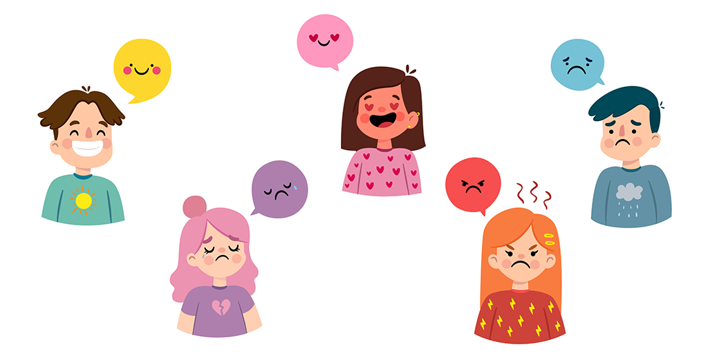

¿Cómo prevenir y actuar frente al bullying?
La mejor forma de combatir el bullying es evitándolo antes de que ocurra. Fomentar una cultura de respeto, empatía y sana convivencia es la clave.


Cultura de Buen Trato
- Saludar y despedirse con respeto.
- Escuchar activamente.
- Aceptar diferencias individuales.
- Rechazar burlas o agresiones.
- Apoyar a quien lo necesita.
Rol de los Estudiantes
- No ser parte del acoso ni tolerarlo.
- Defender y apoyar a las víctimas.
- Buscar ayuda de un adulto.
- Formar brigadas o grupos solidarios.
Rol de los Docentes
- Observar y escuchar a sus estudiantes.
- Promover espacios de confianza.
- Crear actividades de integración.
- Actuar de inmediato ante el acoso.
¿Qué Pueden Hacer los Padres?
- Escuchar sin juzgar a sus hijos.
- Observar cambios emocionales.
- Educar con empatía y respeto.
- Supervisar el uso de redes sociales.
- Participar en actividades escolares.
Educación Emocional
Enseñar a reconocer y expresar emociones es clave para prevenir el acoso. Esto permite:
- Resolver conflictos de manera pacífica.
- Desarrollar empatía y autoestima.
- Fortalecer relaciones positivas.


Actividades Preventivas
- Charlas con especialistas.
- Juegos cooperativos y diálogo.
- Teatro y arte sobre respeto y diversidad.
- Campañas escolares y días temáticos.
Recordatorio: Prevenir el bullying es tarea de toda la comunidad educativa.